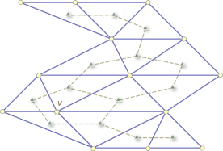

It is clear from the statement that this is a graph coloring problem -- on 1000 vertices. But certainly this is not the end of the story. There must be something special that makes this famous NP-complete problem solvable in this contest.
Represent each player with a vertex, and draw an edge between two players if they cannot use the same color. Obviously we can just draw the graph with each player in his position (x, y).
So there are at most 30 rows of players. Can this help? Observing this fact leads to solutions that are good enough for the small dataset, but not for the large tests.
On each row, the edges form a horizontal line segment from the leftmost point to the rightmost. All the other edges are between two adjacent rows. And more importantly, it is not hard to observe and prove the following:
As we mentioned earlier, we are dealing with a special case of even planar graphs. It is mostly triangulated, and nicely positioned in rows with all edges only from adjacent rows. It turns out that there are many solutions to this problem. Let us describe a few in the rest of this writing. In all the solutions, we try to color the graph with just 3 colors A, B,and C, and if this fails, the answer is 4. Also, to simplify our writing, we assume every point has degree at least 3 -- otherwise we can simply remove it without changing the 3-colorability.
Pick any triangle. Its vertices must be colored with different colors. We color them with A, B,and C. Now, there might be another triangle next to it. i.e., sharing an edge e with it. In that triangle, two vertices of e are already colored; if the third one is not, its color is decided now!
From another point of view, this is simply the following: Whenever there is a vertex with two adjacent neighbors colored, we color it with the third color.
Because every color is forced, the answer is 4 as soon as we see a conflict.
We can do this forced coloring almost all the way. It is easy to see we only need to pause a little when there is a cut point. But this is not hard either: the point separates the graph into an upper part and a lower part, as long as we can color both parts with 3 colors, we can paste them together.
There is a deeper concept revealed in the solution above. We were actually considering the dual graph of a planar graph, which itself is also planar. Each face (in our problem, each triangle) in the original graph becomes a point, and two points are connected if the two faces share an edge.
If you are familiar with the algorithm that 2-colors a graph and detects odd cycles, you may find it very similar to our solution above. We are going to argue that our original graph is 3-colorable if and only if the dual graph is 2-colorable (with one color for all the clockwise triangles).
Observe that if the original graph is 3-colorable, and one triangle gets its three vertices colored A, B, C in clockwise order, then any triangle adjacent to it must have its vertices colored A, B, C in counter-clockwise order. Thus, the original graph being 3-colorable implies its dual is 2-colorable.
The proof of the reversed direction is also not hard to envisage, but it involves more details and requires some additional conditions on our graph. One easy way to prove it is with induction on rows.
The solution above does not allow a much simpler implementation. But it leads to an even nicer observation. We call a vertex in the original graph an inner vertex if it is surrounded by triangles in all the directions. The following fact gives the simplest solution to our problem:
The graph is 3-colorable if and only if there is no inner vertex with odd degree.The rest of this section is devoted to the proof of this fact. If you feel that some of the claims about the planar graph and its dual are not obvious, try to draw some and convince yourself.
Any inner vertex v with degree d is surrounded by d triangles sharing the same vertex. In the dual, they give a cycle of length d that enclose v in the middle.
One direction of the proof is easier. If v has odd degree, then we see an odd cycle in the dual, therefore the original graph is not 3-colorable.
Now assume there is any odd cycle, let us pick C -- the one with the smallest enclosing area. We claim that C must enclose only one inner vertex, and therefore we find an inner point with odd degree. This can be proved in several ways with some details. Basically, if there are two inner vertices enclosed, one can find a path that separates them and hit C in two places. This divides the enclosing area of C into two smaller areas, and it is not hard to see one of the areas must be enclosed by an odd cycle. This contradicts the assumption that C is the odd cycle with smallest area, and completes the sketched proof of our short solution.
In the picture below, there is a big cycle with length 9, and v is an inner vertex surrounded by a cycle with length 5.

Again, we look at the original graph. We assume the graph is connected, and every vertex has degree at least 3.
Notice that there are at most 30 rows. One can fix the color of the first vertex in each row. There are 2rows ways of doing this (as opposed to 3rows). Once this is fixed, all the rest of the coloring is determined, for a reason similar to the one explained in Section 1.
Another solution is dynamic programming: do a sweep from the right to the left, and remember the color of the first vertex to the right on each row. Notice that you cannot do this from left to right, since knowing the color of only one vertex on a row is not enough in that direction.
Graph coloring - Four color theorem - Dual graph
The solution with the local property resembles very much a theorem of Heawood from 1898: that a maximal planar graph is 3-colorable if and only if every degree is even. A more general theorem, which implies our solution, can be found in the paper A new 3-color criterion for planar graphs by Krzysztof Diks, Lukasz Kowalik, and Maciej Kurowski.